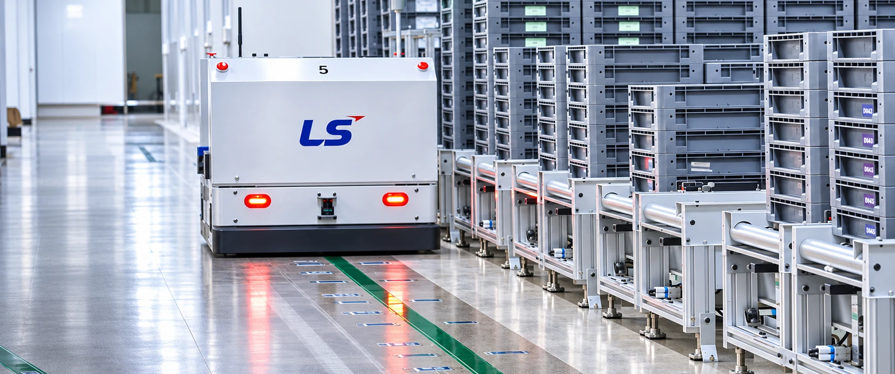
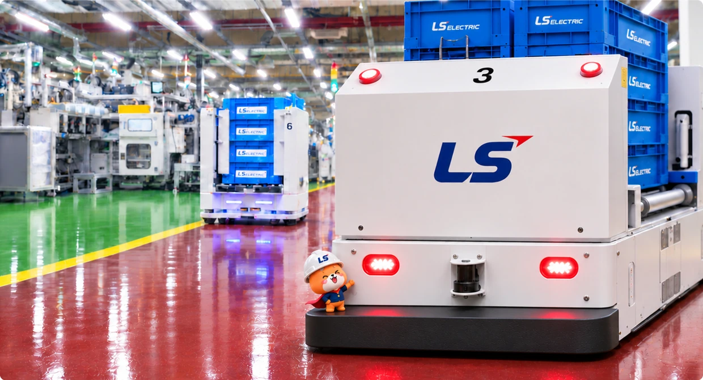
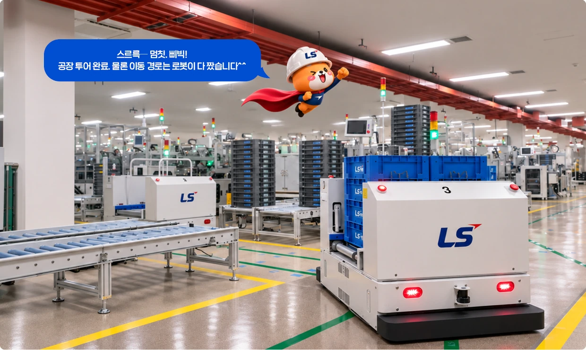
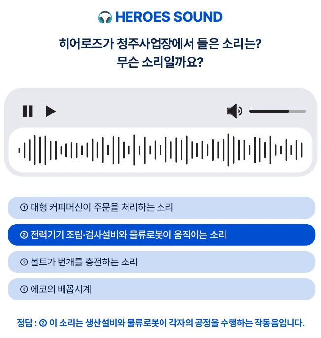
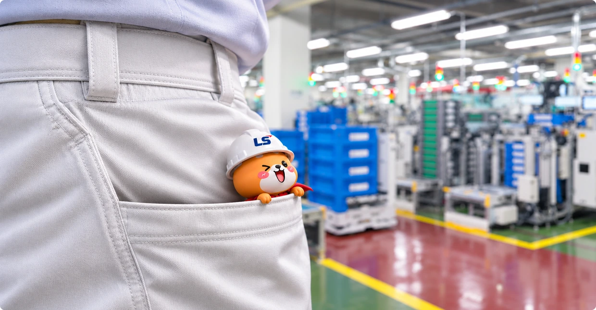
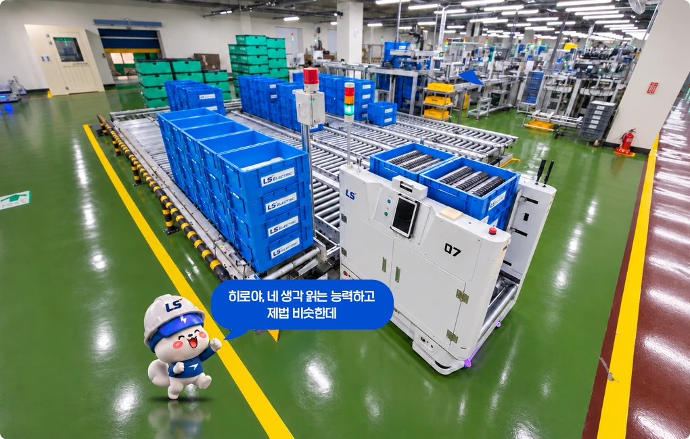
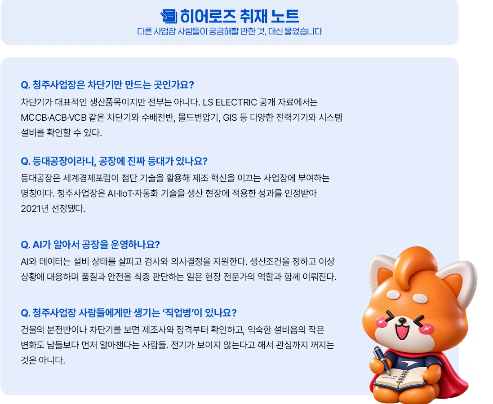
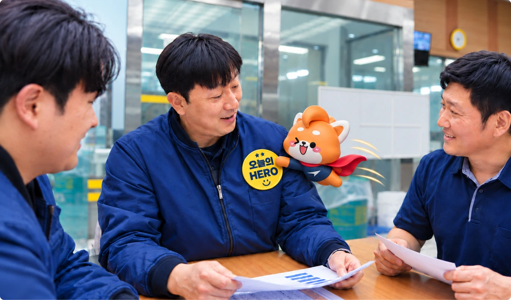

전기가 스스로 생각하는 공장에,
세 히어로가 잠입했다
차단기 생산부터 자율주행 물류까지, LS ELECTRIC 청주사업장
AI 요약 | LS ELECTRIC 청주사업장 한눈에 보기
LS ELECTRIC 청주사업장은 차단기와 수배전반 등 전력기기를 생산한다. 조립부터 검사·물류까지 데이터를 연결하고 자율주행 로봇과 AI 용접을 현장에 적용해 2021년 세계경제포럼 등대공장으로 선정됐다. 볼트·에코·히로는 생산라인을 둘러보며 자동화 설비가 하는 일과 품질·안전을 최종 판단하는 현장 전문가의 역할을 살핀다.
오늘 일렉트릭 히어로즈가 도착한 곳은 충북 청주, LS ELECTRIC 청주사업장. 전기를 안전하게 흐르게 하고 필요할 때 정확히 끊어주는 전력기기를 만드는 곳이다. 이곳에서는 부품 조립부터 검사와 포장, 물류까지 생산의 여러 과정이 데이터로 연결된다. 오늘의 비밀 임무는 ‘공장은 어떻게 스스로 생각하고 움직이는가’를 밝히는 것. 볼트는 전력의 흐름을, 에코는 에너지 사용을, 히로는 자동화의 비밀을 맡았다. 세 친구는 자율주행 물류로봇 뒤에 바짝 붙어 공장 안으로 조용히 미끄러져 들어갔다.

01 LS ELECTRIC 청주사업장에서는 무엇을 만들까?
청주사업장에 들어선 볼트의 머리띠가 연신 반짝였다. 공장 곳곳에서 전기를 안전하게 제어하는 전력기기가 만들어지고 있었기 때문이다. 이곳에서는 MCCB·ACB·VCB 같은 차단기부터 수배전반, 몰드변압기, GIS 등 다양한 전력기기와 시스템 설비를 생산한다. 이름은 조금 어렵지만 하는 일은 분명하다. 전기가 필요한 곳까지 안정적으로 흐르도록 돕고, 이상이 생기면 빠르게 끊어 사람과 설비를 보호하는 것이다. 볼트가 차단기 앞에서 고개를 끄덕였다. “전기를 잘 보내는 것만큼, 잘 멈추게 하는 것도 중요하군.”
사람에게는 제품 한 대지만 히어로즈에게는 거대한 전력 도시다. 볼트는 차단기 사이를 날며 전기의 길을 살폈고, 에코는 설비마다 얼마나 효율적으로 에너지를 사용하는지 유심히 들여다봤다. 그사이 히로는 이동 중인 물류로봇에 살짝 올라탔다. “잠깐만 타려던 건데, 이 친구 길을 너무 잘 알잖아?” 로봇이 정확한 위치에 멈추자 히로는 망토를 털며 태연하게 내려왔다.


히어로즈가 청주사업장에서 들은 소리는?
① 대형 커피머신이 주문을 처리하는 소리
② 전력기기 조립·검사설비와 물류로봇이 움직이는 소리
③ 볼트가 번개를 충전하는 소리
④ 에코의 배꼽시계
정답 : ② 이 소리는 생산설비와 물류로봇이 각자의 공정을 수행하는 작동음입니다.

02 스마트공장은 어떻게 스스로 움직일까?
이번에는 히로가 차원 이동 능력을 발휘해 생산라인 안쪽으로 먼저 들어갔다. 그런데 히로가 도착하기도 전에 설비는 생산할 제품에 맞춰 조건을 바꾸고, 물류로봇은 필요한 부품을 정확한 위치로 옮기고 있었다. 청주사업장 스마트공장에는 IIoT 기반 자동 설비 모델 변경 시스템, 자율주행 사내 물류로봇, AI 기반 실시간 자동 용접, 머신러닝 기반 소음·진동 검사 등 다양한 기술이 적용돼 있다. 생산과 품질 데이터가 연결되면서 다품종 생산에 유연하게 대응하고 이상 징후도 더 빠르게 살필 수 있다. 이런 제조 혁신 역량을 인정받아 청주사업장은 2021년 세계경제포럼이 선정하는 등대공장에 이름을 올렸다.

히로는 괜히 망토를 한 번 고쳐 맸다. 하지만 공장을 조금 더 지켜보자 스마트하다는 말이 단순히 기계가 사람 없이 움직인다는 뜻은 아니라는 사실을 알게 됐다. 데이터가 이상을 알려도 원인을 판단하고, 생산조건을 조정하고, 품질과 안전을 최종 확인하는 일에는 현장 전문가의 경험이 필요했다. AI와 자동화가 가능성을 빠르게 보여준다면, 어떤 답을 실제 공정에 적용할지는 사람이 결정한다. 설비는 서로 연결돼 움직이고, 혁신은 생산·기술·품질 등 서로 다른 전문성을 가진 사람들이 연결될 때 완성된다.

히어로즈 취재 노트
Q. 청주사업장은 차단기만 만드는 곳인가요?
차단기가 대표적인 생산품목이지만 전부는 아니다. LS ELECTRIC 공개 자료에서는 MCCB·ACB·VCB 같은 차단기와 수배전반, 몰드변압기, GIS 등 다양한 전력기기와 시스템 설비를 확인할 수 있다.
Q. 등대공장이라니, 공장에 진짜 등대가 있나요?
등대공장은 세계경제포럼이 첨단 기술을 활용해 제조 혁신을 이끄는 사업장에 부여하는 명칭이다. 청주사업장은 AI·IIoT·자동화 기술을 생산 현장에 적용한 성과를 인정받아 2021년 선정됐다.
Q. AI가 알아서 공장을 운영하나요?
AI와 데이터는 설비 상태를 살피고 검사와 의사결정을 지원한다. 생산조건을 정하고 이상 상황에 대응하며 품질과 안전을 최종 판단하는 일은 현장 전문가의 역할과 함께 이뤄진다.
Q. 청주사업장 사람들에게만 생기는 ‘직업병’이 있나요?
건물의 분전반이나 차단기를 보면 제조사와 정격부터 확인하고, 익숙한 설비음의 작은 변화도 남들보다 먼저 알아챈다는 사람들. 전기가 보이지 않는다고 해서 관심까지 꺼지는 것은 아니다.
03 자동화가 깊어질수록 사람이 더 중요한 이유
히어로즈는 거대한 설비보다 더 자주 현장 사람들의 얼굴을 올려다봤다. 모니터 속 데이터를 다시 확인하는 눈, 설비 상태를 점검하는 손, 작은 이상음에 걸음을 멈추는 귀, 문제가 생기면 여러 부서가 머리를 맞대는 회의. 스마트공장은 데이터를 기반으로 빠르게 움직이지만, 그 기준을 세우고 예외에 대응하는 것은 사람이다. 전력기기의 품질 역시 하나의 설비나 하나의 수치만으로 완성되지 않는다. 생산·기술·품질·설비 담당자가 서로의 판단을 연결해야 제품의 신뢰성과 현장의 안전을 함께 지킬 수 있다.

오늘 히어로즈가 청주사업장에서 발견한 진짜 히어로는 생산과 설비, 품질 데이터를 연결하는 제조혁신 담당자입니다. 설비가 보내는 신호를 읽고 현장을 직접 확인하며, 더 안전하고 효율적인 방법을 동료들과 함께 찾아가는 것이 그의 일입니다. 볼트·에코·히로는 오늘의 HERO 스티커를 슬쩍 붙여두기로 했습니다. “스마트공장을 움직이는 건 기술이지만, 더 나은 방향으로 움직이게 하는 건 결국 사람의 판단 아닐까요?”
히어로즈의 충전 처방
오래 서 있었다면, 발목부터 체크!
청주사업장처럼 서 있거나 걷는 시간이 긴 현장에서는 하루가 끝날수록 발목과 종아리에 피로가 쌓이기 쉽습니다. 히어로즈가 오늘의 ‘3분 에너지 리셋’을 처방합니다. 별도 도구 없이 잠깐만 몸을 풀어도 굳어 있던 하체를 가볍게 깨울 수 있어요.
① 까치발 들기 10회
벽이나 의자를 가볍게 잡고 발뒤꿈치를 천천히 올렸다 내립니다. 반동보다는 천천히 움직이는 것이 포인트!
② 종아리 늘리기 20초 × 양쪽
한 발을 뒤로 보내 뒤꿈치를 바닥에 붙인 채 앞쪽 무릎을 살짝 굽혀주세요. 종아리가 부드럽게 당기는 정도까지만.
③ 발목 돌리기 10회 × 양쪽
의자에 앉아 한쪽 발을 살짝 들고 발목으로 천천히 원을 그립니다. 반대 방향도 같은 횟수로 반복합니다.
이 이야기의 키워드
이번 이야기는 어떠셨나요?
6DISCOVER

구자균 회장, “AI 전력난 해법은 지능형 DC 배전”
아시아 첫 CIRED 기조연설에서 지능형 DC 플랫폼의 미래를 소개합니다.

LS ELECTRIC의 역사를 가장 빠르게 살펴보는 법
LS ELECTRIC의 기업사를 6분으로 정리한 영상입니다.

숫자 너머의 시장을 읽고, 가격을 설계하다
사업총괄)마케팅팀 가격·데이터 Part